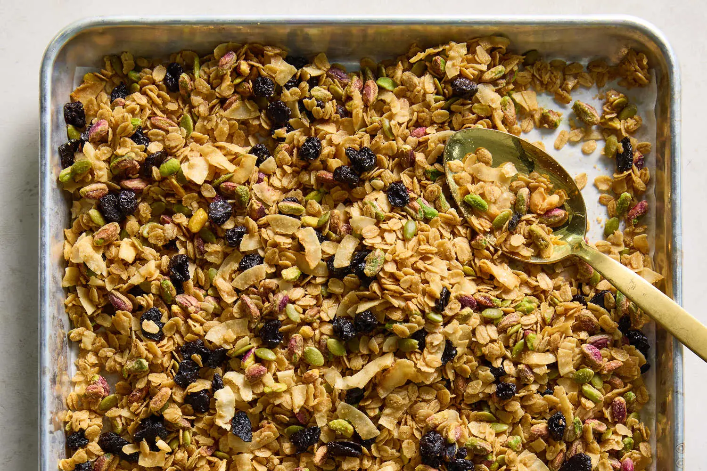

Eleven Madison Park Granola

Description
At the end of every meal at the restaurant Eleven Madison Park, in Manhattan, guests are presented with a small gift: a jar of granola for tomorrow’s breakfast. It is classic Alpine fare, taken straight from the chef Daniel Humm’s childhood in Zurich. The rolled oats are golden with brown sugar and a hint of maple, with salt and a wisp of olive oil for depth. Coconut chips and shelled pistachios provide a hint of whimsy, pumpkin seeds a leathery crunch. Dried sour cherries peek out from here and there, bits of softness to complete the whole. Best of all, the recipe is simple and bulletproof for anyone with a rimmed baking sheet and an oven, at least if you're careful with the kosher salt. Opinions vary greatly over the amount we call for: a whole tablespoon. For some, that is many teaspoons too many. (For many others it is absolutely perfect.) Season to taste.
Ingredients:
- 2.75 cups rolled oats
- 1 cup shelled pistachios
- 1 cup unsweetened coconut chips
- 0.66 cup pumpkin seeds
- 1 tablespoon kosher salt
- 0.5 cup light brown sugar
- 0.33 cup maple syrup
- 0.33 cup extra virgin olive oil
- 0.75 cup dried sour cherries
Instructions:
- Heat oven to 300 degrees. In a large bowl, mix together the oats, pistachios, coconut, pumpkin seeds and salt.
- In a small saucepan set over low heat, warm the sugar, syrup and olive oil until the sugar has just dissolved, then remove from heat. Fold liquids into the mixture of oats, making sure to coat the dry ingredients well.
- Line a large rimmed baking sheet with parchment paper or a silicone baking mat, and spread granola over it. Bake until dry and lightly golden, 35 to 40 minutes, stirring granola a few times along the way.
- Remove granola from oven, and mix into it the dried sour cherries. Allow to cool to room temperature before transferring to a storage container. Makes about 6 cups.
Source: NYTimes Cooking
Home